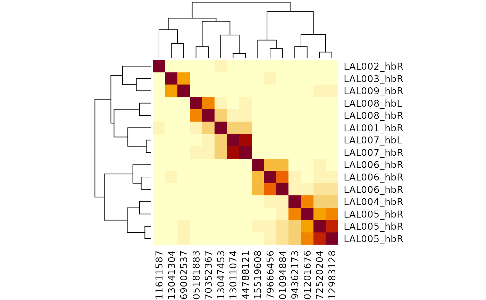
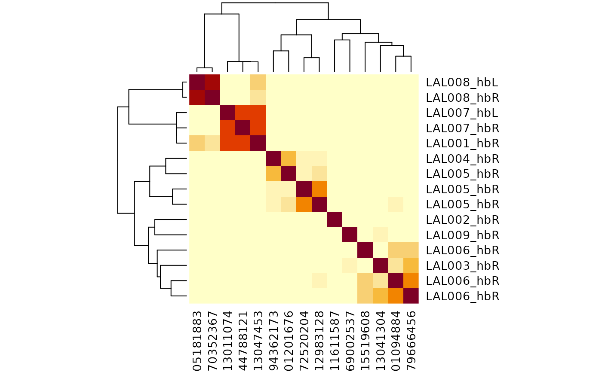
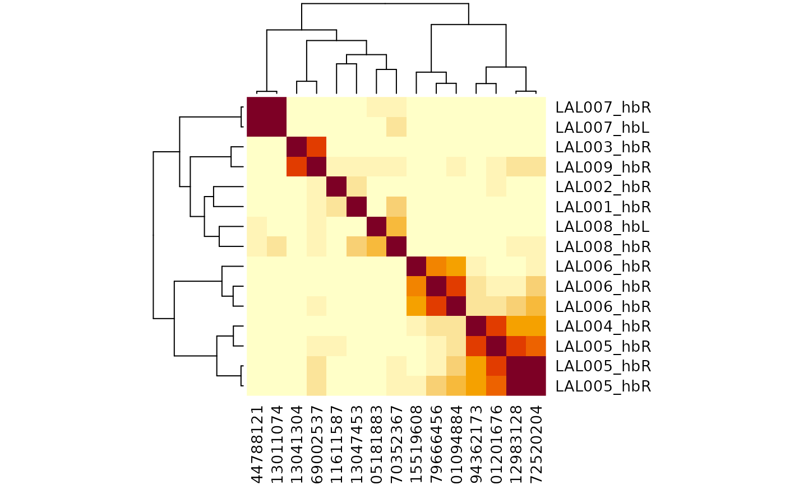
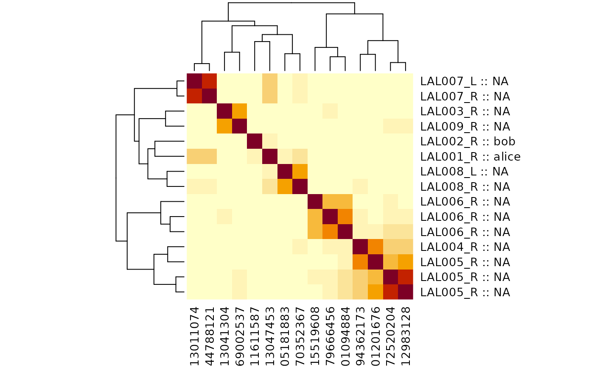
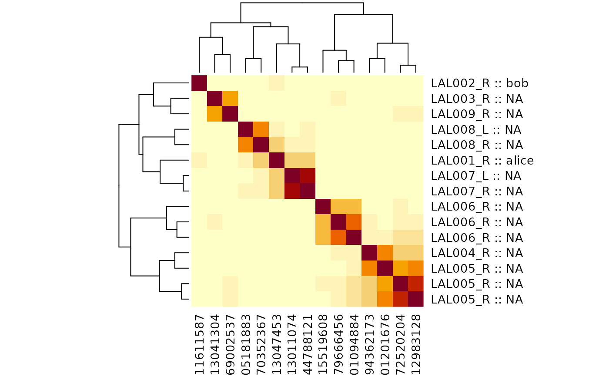
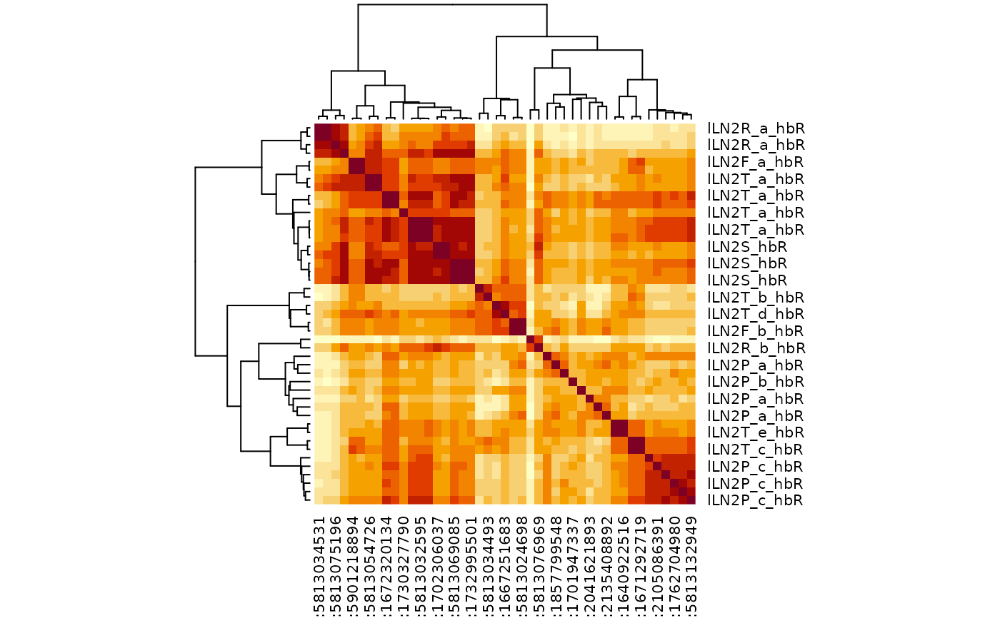
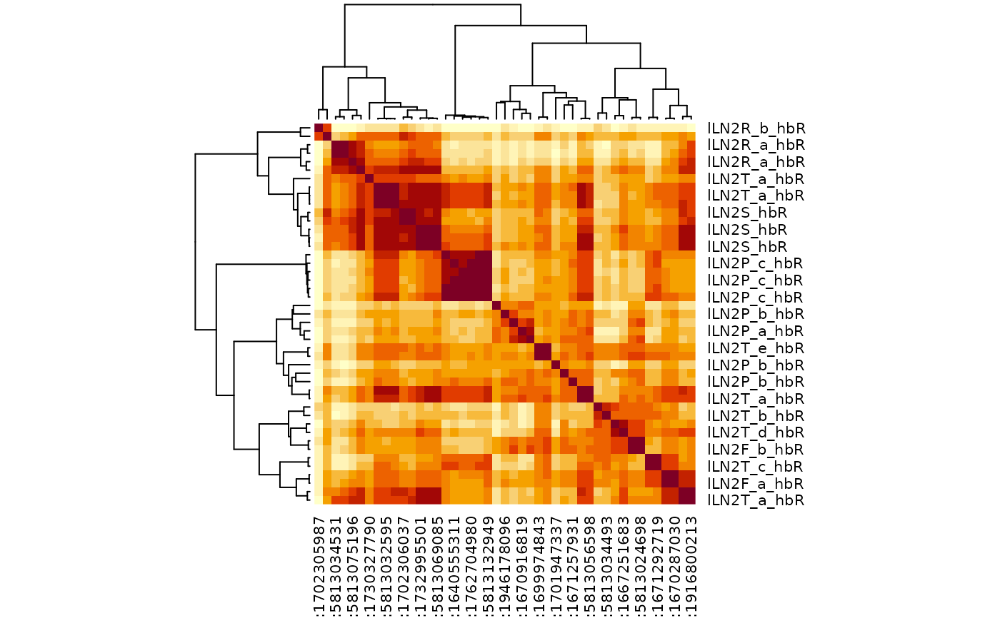
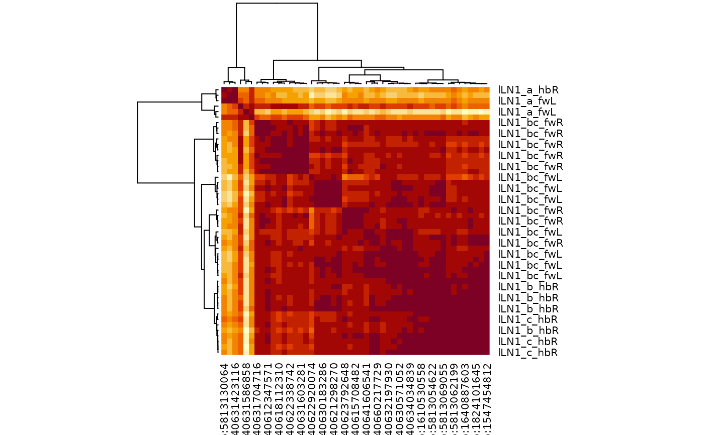

Multi dataset cosine clustering
Usage
multi_connection_table(
ids,
partners = c("inputs", "outputs"),
threshold = 1L,
group = "type"
)
cf_cosine_plot(
ids = NULL,
...,
threshold = 5,
partners = c("outputs", "inputs"),
labRow = "{type}_{coconatfly::abbreviate_datasets(dataset)}{side}",
group = "type",
heatmap = TRUE,
matrix = FALSE,
interactive = FALSE,
drop_dataset_prefix = FALSE,
nas = c("zero", "drop"),
method = c("ward.D", "single", "complete", "average", "mcquitty", "median", "centroid",
"ward.D2")
)Arguments
- ids
A set of across dataset
keysor neuron ids wrapped bycf_idsor a dataframe compatible with thekeysfunction.- partners
Whether to return inputs or outputs
- threshold
return only edges with at least this many matches. 0 is an option since neuprint sometimes returns 0 weight edges.
- group
The name or the grouping column for partner connectivity (defaults to
"type") or a logical wheregroup=FALSEmeans no grouping (see details).- ...
Additional arguments passed to
heatmap- labRow
Optionally, either string that can be interpolated by
glueor a character vector matching the number of neurons specified byids. See details for an important limitation in the second case.- heatmap
A logical indicating whether or not to plot the heatmap OR a function to plot the heatmap whose argument names are compatible with
stats::heatmap.gplots::heatmap.2is a good example. Defaults toTRUEtherefore plotting the full heatmap withstats::heatmap.- matrix
Whether to return the raw cosine matrix (rather than a heatmap/dendrogram)
- interactive
Whether to plot an interactive heatmap (allowing zooming and id selection). See details.
- drop_dataset_prefix
Whether to remove dataset prefix such as
hb:orfw:from dendrograms. This is useful when reviewing neurons in interactive mode.- nas
What to do with entries that have NAs. Default is to set them to 0 similarity.
- method
The cluster method to use (see
hclust)
Value
multi_connection_table returns a connectivity dataframe as
returned by cf_partners but with an additional column
partners which indicates (for each row) whether the partner neurons
are the input or output neurons.
The result of heatmap invisibly including the row and
column dendrograms or when heatmap=FALSE, an
hclust dendrogram or when maxtrix=TRUE a cosine
matrix.
Details
group=FALSE only makes sense for single dataset clustering -
type labels are essential for linking connectivity across datasets. However
group=FALSE can be useful e.g. for co-clustering columnar elements
in the visual system that have closely related partners usually because
they are in neighbouring columns. At the time of writing, there is no
metadata support in FANC so group=FALSE is the only option there.
group can be set to other metadata columns such as class or
hemilineage, serial (serially homologous cell group) if
available. This can reveal other interesting features of organisation.
The labRow argument is most conveniently specified as a length 1
string to be interpolated by glue; this will happen in the
context of a data frame generated by cf_meta. One reason why
this is convenient is that you do not have to think about matching up the
labels to the order of neurons in the dendrogram
However, if you need to use additional information for your labels not
present in the cf_meta data then you will need to generate
your own labRow vector. The recommended way to do this is to use
cf_meta to fetch the metadata for your neurons and then to
construct an additional column with your preferred label. This ensures that
each entry in the labRow argument can be matched to a specific
neuron (defined by the key column of the metadata data frame).
Note that if you try to pass a user defined labRow character vector
without supplying an explicitly ordered set of neurons to the ids
argument then you will get an error. This is because cf_cosine_plot
has no way of knowing which label corresponds to which neuron, almost
certainly resulting in incorrect row labels on your dendrogram.
Examples
# \donttest{
# basic cosine clustering, in this case for one dataset
cf_cosine_plot(cf_ids(hemibrain="/type:LAL00.+"))
#> Matching types across datasets. Dropping 0/748 output partner types with total weight 0/15291
#> Matching types across datasets. Dropping 0/690 input partner types with total weight 0/11078
# same but dropping the dataset prefix in the column labels
cf_cosine_plot(cf_ids(hemibrain="/type:LAL00.+"),
drop_dataset_prefix = TRUE)
#> Matching types across datasets. Dropping 0/748 output partner types with total weight 0/15291
#> Matching types across datasets. Dropping 0/690 input partner types with total weight 0/11078

# only cluster by inputs
cf_cosine_plot(cf_ids(hemibrain="/type:LAL00.+"), partners='in')
#> Matching types across datasets. Dropping 0/690 input partner types with total weight 0/11078

# or outputs
cf_cosine_plot(cf_ids(hemibrain="/type:LAL00.+"), partners='in')
#> Matching types across datasets. Dropping 0/690 input partner types with total weight 0/11078
# the same but without grouping partner connectivity by type
# only makes sense for single dataset plots
cf_cosine_plot(cf_ids(hemibrain="/type:LAL00.+"), group = FALSE)

## Using user supplied row labels
# e.g. because you have some labels of your own that you want to add
library(dplyr)
#>
#> Attaching package: ‘dplyr’
#> The following objects are masked from ‘package:nat’:
#>
#> intersect, setdiff, union
#> The following objects are masked from ‘package:stats’:
#>
#> filter, lag
#> The following objects are masked from ‘package:base’:
#>
#> intersect, setdiff, setequal, union
library(glue)
lalmeta=cf_meta(cf_ids(hemibrain="/type:LAL00.+"))
# NB left_join requires the id columns to have the same character data type
mytypes=data.frame(
id=as.character(c(5813047453, 1011611587)),
mytype=c("alice", 'bob'))
# NB glue::glue functions makes the label using column names
lalmeta2=left_join(lalmeta, mytypes, by='id') %>%
mutate(label=glue('{type}_{side} :: {mytype}'))
head(lalmeta2)
#> id pre post upstream downstream status statusLabel voxels
#> 1 5813047453 943 2867 2867 7967 Traced Roughly traced 1709019324
#> 2 1011611587 876 2392 2392 8542 Traced Roughly traced 1502700413
#> 3 5813041304 288 905 905 2089 Traced Roughly traced 695312778
#> 4 894362173 208 469 469 1703 Traced Roughly traced 469303915
#> 5 1572520204 126 474 474 863 Traced Roughly traced 402431356
#> 6 5901201676 120 383 383 832 Traced Roughly traced 360821541
#> cropped instance type cellBodyFiber notes soma side class group dataset
#> 1 FALSE LAL001_R LAL001 ADL02 <NA> TRUE R <NA> <NA> hemibrain
#> 2 FALSE LAL002_R LAL002 ADL02 <NA> TRUE R <NA> <NA> hemibrain
#> 3 FALSE LAL003_R LAL003 ADL06 <NA> TRUE R <NA> <NA> hemibrain
#> 4 FALSE LAL004_R LAL004 ADL06 <NA> TRUE R <NA> <NA> hemibrain
#> 5 FALSE LAL005_R LAL005 ADL06 <NA> TRUE R <NA> <NA> hemibrain
#> 6 FALSE LAL005_R LAL005 ADL06 <NA> TRUE R <NA> <NA> hemibrain
#> key mytype label
#> 1 hb:5813047453 alice LAL001_R :: alice
#> 2 hb:1011611587 bob LAL002_R :: bob
#> 3 hb:5813041304 <NA> LAL003_R :: NA
#> 4 hb:894362173 <NA> LAL004_R :: NA
#> 5 hb:1572520204 <NA> LAL005_R :: NA
#> 6 hb:5901201676 <NA> LAL005_R :: NA
# now use that in the plot
# NB with function allows cf_cosine_plot to use dataframe columns directly
lalmeta2 %>%
with(cf_cosine_plot(key, labRow=label))
#> Matching types across datasets. Dropping 0/748 output partner types with total weight 0/15291
#> Matching types across datasets. Dropping 0/690 input partner types with total weight 0/11078

# bigger clustering
lalhc=cf_cosine_plot(cf_ids(hemibrain="/type:LAL.+"), heatmap=FALSE)
#> Matching types across datasets. Dropping 0/17386 output partner types with total weight 0/331470
#> Matching types across datasets. Dropping 0/23297 input partner types with total weight 0/435509
#> Warning: diag(V) has non-positive or non-finite entries; finite result is doubtful
lalmeta=cf_meta(lalhc$labels)
lalmeta=coconat::add_cluster_info(lalmeta, lalhc, h=0.75, idcol='key')
# }
if (FALSE) {
## The previous examples are for single datasets to avoid authentication issues
## on the build server, but similar queries could be run for multiple datasets
cf_cosine_plot(cf_ids(flywire="/type:LAL.+", malecns="/type:LAL.+"))
cf_cosine_plot(cf_ids("/type:LAL.+", datasets='brain'))
# same as since the default is brain
cf_cosine_plot(cf_ids("/type:LAL.+"))
# just make the hclust dendrogram
lalhc=cf_cosine_plot(cf_ids("/type:LAL.+"), heatmap=FALSE)
lalmeta=cf_meta(lalhc$labels)
lalmeta=coconat::add_cluster_info(lalmeta, lalhc, h=0.75)
# look at the results interactively
cf_cosine_plot(cf_ids("/type:LAL.+"), interactive=TRUE)
}
# \donttest{
# Showcase examples using multi_connection_table to allow
# only a subset of partners to be used for typing
mct=multi_connection_table(cf_ids(hemibrain="/lLN2.+"), partners='in')
#> Matching types across datasets. Dropping 0/63218 input partner types with total weight 0/412813
cf_cosine_plot(mct)

library(dplyr)
mct2=mct %>% filter(!grepl("PN",type))
cf_cosine_plot(mct2)

mct3=cf_ids("/type:lLN2.+", datasets=c("hemibrain", "flywire")) %>%
multi_connection_table(., partners='in') %>%
mutate(class=case_when(
grepl("LN", type) ~ "LN",
grepl("RN", type) ~ "RN",
grepl("^M.*PN", type) ~ 'mPN',
grepl("PN", type) ~ 'uPN',
TRUE ~ 'other'
)) %>%
# try merging connectivity for partners that don't have much specificity
mutate(type=case_when(
class=="RN" ~ sub("_.+", "", type),
class=="uPN" ~ 'uPN',
TRUE ~ type
))
#> Loading required namespace: git2r
#> Matching types across datasets. Dropping 24335/107368 input partner types with total weight 234059/838394
if (FALSE) {
mct3%>%
# remove RN/uPN connectivity could also use the merged connectivity
filter(!class %in% c("RN", "uPN")) %>%
cf_cosine_plot(interactive=TRUE)
}
# This time focus in on a small number of query neurons
mct3 %>%
mutate(query_key=ifelse(partners=='outputs', pre_key, post_key)) %>%
filter(query_key %in% cf_ids('/type:lLN2(T_[bde]|X08)',
datasets = c("hemibrain", "flywire"), keys = TRUE)) %>%
cf_cosine_plot()

# }
# another worked example lLN1 neurons
# \donttest{
lLN1=cf_ids("/type:lLN1_.+", datasets=c("hemibrain", "flywire")) %>%
multi_connection_table(., partners='in') %>%
mutate(class=case_when(
grepl("LN", type) ~ "LN",
grepl("RN", type) ~ "RN",
grepl("^M.*PN", type) ~ 'mPN',
grepl("PN", type) ~ 'uPN',
TRUE ~ 'other'
)) %>%
mutate(type=case_when(
class=="RN" ~ sub("_.+", "", type),
class=="uPN" ~ 'uPN',
TRUE ~ type
))
#> Matching types across datasets. Dropping 7237/17265 input partner types with total weight 124784/234441
lLN1 %>%
filter(!class %in% c("RN", "uPN")) %>%
cf_cosine_plot()

# }